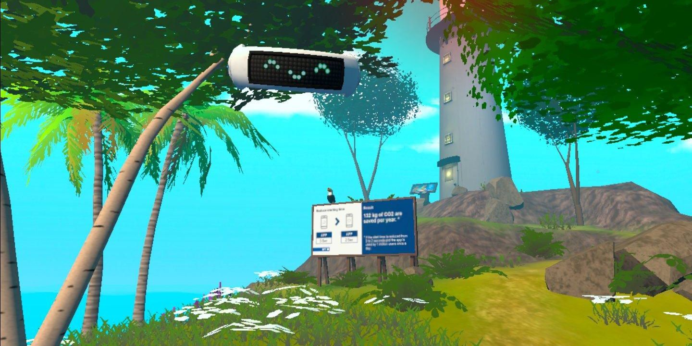
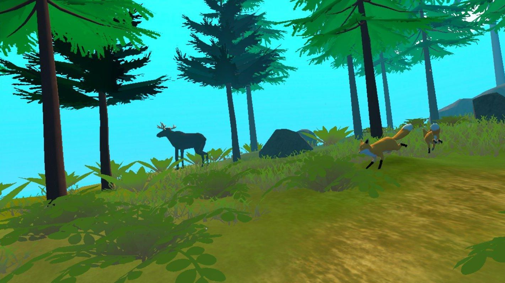
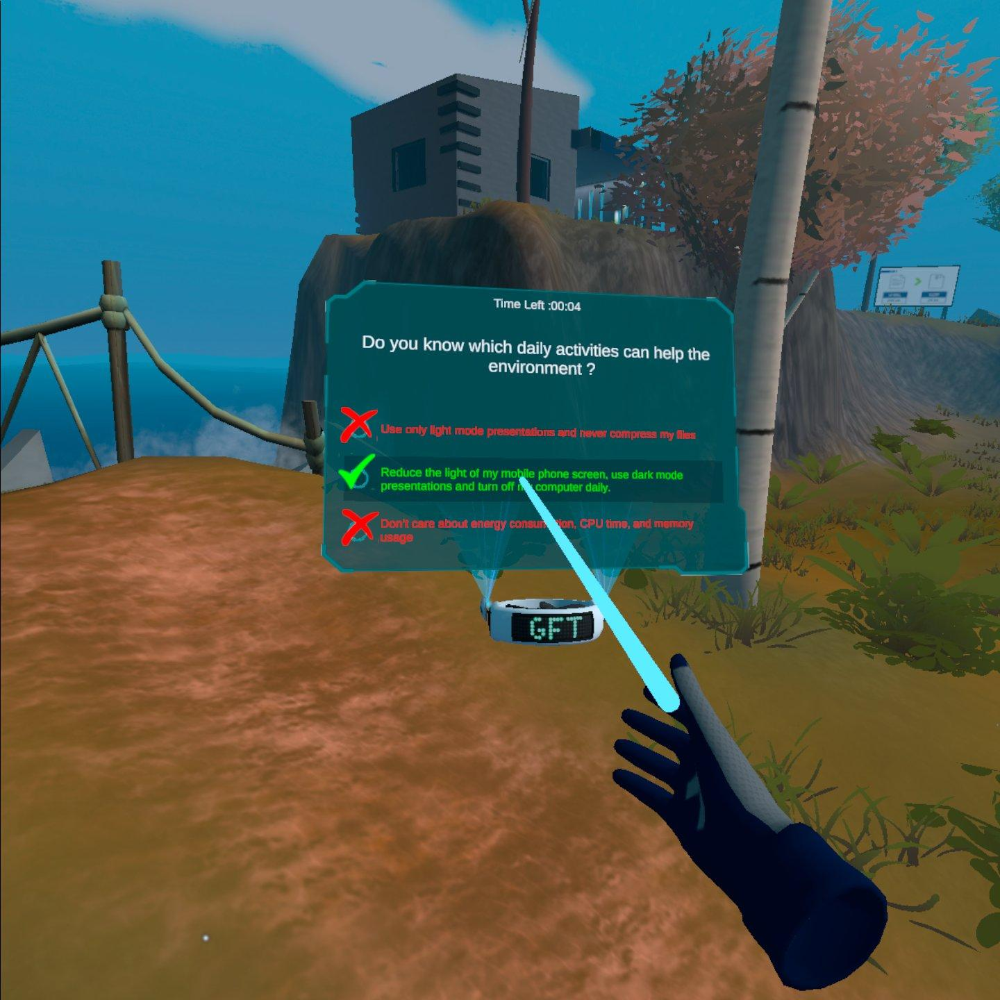
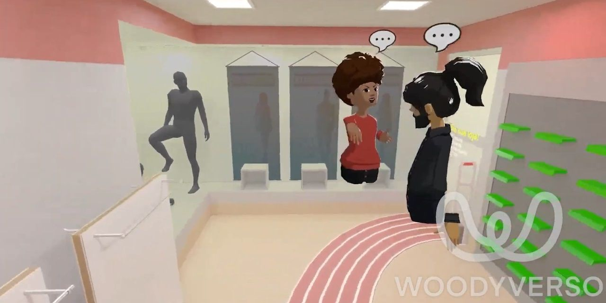

PROJETO IMERSIVO
GreenCoding Experience
Experiência de realidade virtual orientada por decisões, impacto ambiental e transformação progressiva do espaço.
Conhecer projetoSOBRE MEU GERENCIAMENTO
Meu trabalho de gerenciamento está ligado à capacidade de transformar objetivos amplos em etapas claras, combinando organização, comunicação e acompanhamento.
Atuo conectando equipes criativas e técnicas, estruturando prioridades, acompanhando cronogramas e ajudando projetos a avançarem com mais clareza. A experiência em jogos e tecnologia também me permite entender as necessidades específicas de cada etapa de produção.
Os projetos abaixo representam iniciativas em que planejamento, colaboração e visão de produto foram tão importantes quanto a execução.

PROJETO IMERSIVO
Experiência de realidade virtual orientada por decisões, impacto ambiental e transformação progressiva do espaço.
Conhecer projeto
EDUCAÇÃO E PRODUÇÃO
Iniciativa voltada à organização de conhecimento, atividades e colaboração em torno de projetos criativos.
Conhecer projeto
COMUNIDADE E PROJETO
Projeto focado em conectar pessoas, iniciativas e oportunidades por meio de uma estrutura colaborativa.
Conhecer projeto
PRODUTO E PARCERIAS
Articulação entre marcas, experiência digital e ambiente físico para criar uma proposta de produto coerente.
Conhecer projeto